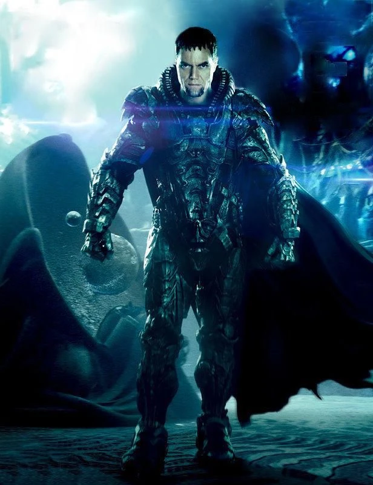
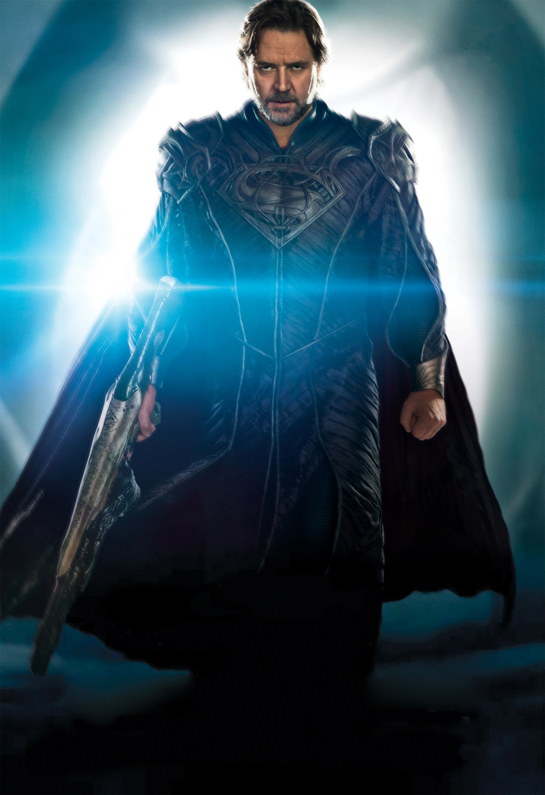

A história se passa em Krypton, várias gerações antes de sua destruição catastrófica. O livro apresenta diversos personagens importantes, incluindo Jor-El, um cientista que descobre evidências alarmantes sobre a instabilidade do planeta; sua esposa, Lara; e o General Zod, um militar poderoso.
À medida que a trama se desenrola, Krypton está enfrentando crescentes problemas ambientais e políticos. O Conselho de Krypton, liderado por Jor-El, debate medidas para salvar o planeta, mas as facções políticas e a corrupção dificultam a ação eficaz. Paralelamente, General Zod está envolvido em um golpe de Estado e busca consolidar seu poder.
O livro explora a cultura kryptoniana, a sociedade e a tecnologia avançada do planeta, além de detalhar a história de Kal-El (o futuro Superman) desde a concepção até seu envio à Terra. O romance culmina com a destruição de Krypton, uma tragédia inevitável que Jor-El previu, mas que ninguém conseguiu impedir.
No geral, "Os Últimos Dias de Krypton" oferece uma visão fascinante do mundo de Krypton e dos eventos que precederam a origem do Superman. Ele explora temas como corrupção, política, ciência e sacrifício, enquanto detalha a complexa sociedade kryptoniana e seus personagens icônicos.